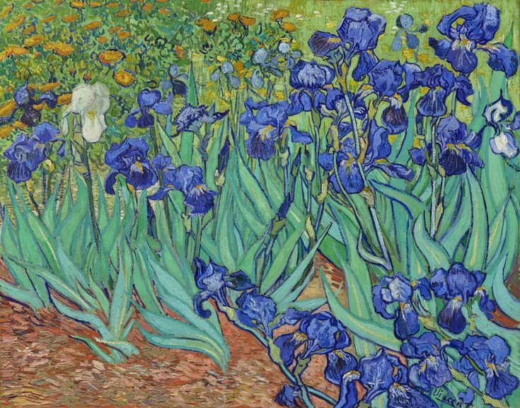

A Symphony of Colors: Van Gogh's "Irises"
Vincent van Gogh's "Irises" stands as a testament to the artist's ability to capture the beauty of nature with an intensity that goes beyond mere representation. Painted in 1889 during his stay at the Saint-Paul-de-Mausole asylum, this masterpiece is a celebration of color, form, and the transformative power of art.
A Blooming Symphony
"Irises" is a visual symphony that unfolds on the canvas, with each brushstroke contributing to a harmonious crescendo of color. The irises, rendered in varying shades of blue and purple, burst forth in a riot of hues that captivate the viewer's gaze.
Van Gogh's distinctive swirling brushstrokes infuse the flowers with a sense of movement and vitality. The composition is dynamic, and the flowers seem to dance against the backdrop of a vibrant, undulating field.
The Artistic Process
As with many of van Gogh's works, "Irises" provides a glimpse into the artist's emotional and mental state. Created during a period of self-reflection and contemplation, the painting reflects both the serenity of the flowers and the turbulence of van Gogh's inner world.
The artist's expressive technique, characterized by impasto – the thick application of paint – adds texture and depth to the canvas. Van Gogh's devotion to his craft is palpable in every stroke, creating a tactile quality that invites the viewer to immerse themselves in the artwork.
Symbolism and Meaning
Irises have been rich in symbolism throughout art history, often associated with messages of hope, faith, and wisdom. In van Gogh's "Irises," the symbolism is layered. The vibrant colors may evoke a sense of joy and vitality, while the dynamic composition hints at the transient nature of life and the enduring power of nature's cycles.
Influence on Modern Art
"Irises" has left an indelible mark on the world of art, influencing subsequent generations of artists. The bold use of color, the emotive brushwork, and the ability to infuse nature with profound emotional resonance have inspired countless admirers and creators.
Conclusion
Vincent van Gogh's "Irises" invites us to step into a world where nature becomes a canvas for the artist's emotions. It is a testament to the transformative power of art, where the simple act of painting flowers becomes a profound expression of the human spirit.
As we immerse ourselves in the sea of irises, we are reminded that, through art, van Gogh was able to transcend the confines of his own challenges and offer us a glimpse into the eternal beauty that surrounds us.
In the words of the artist, "If you truly love nature, you will find beauty everywhere."